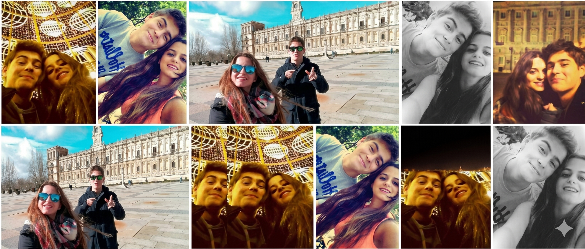
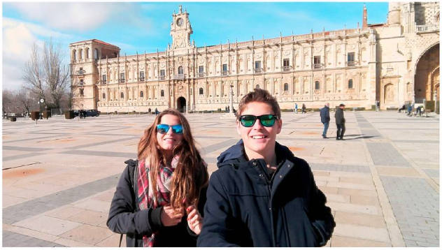
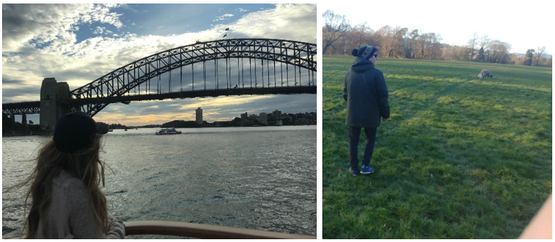
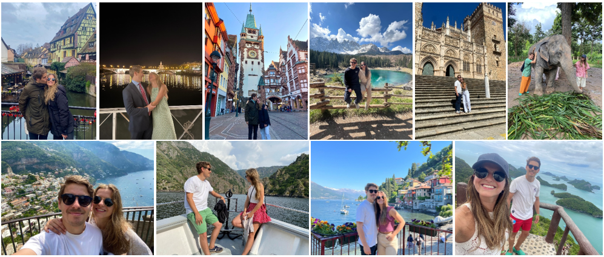

bienvenido al autobús
Mante & Moni
13 · junio · 2026
🚌 Trayecto en curso
En camino
Salida
19:25
Llegada
20:00
—
minutos para llegar
Lo que queda de celebración
19:25
🚌 Salida de los autobuses
20:00
🥂 Bienvenida & cóctel - Finca El Pendolero
22:00
🍽️ Cena
23:30
🎶 ¡Empieza la fiesta!
02:30
🚌 Primer autobús - Destino: Pozuelo y Moncloa
05:00
🌅 Último autobús - Destino: Pozuelo y Moncloa
💌 Déjanos tu mensaje
nuestra historia
Las segundas partes
pueden ser mejores
pueden ser mejores
Verano 2016

Viaje de fin de curso a Mallorca
Segundo día de playa, Mante va a saludar a sus ex-compañeros de Los Robles. Ahí estaba Moni y Bea se encargó de que se conocieran. El resto es historia.
"Si Mante la conquistó con unos pantalones amarillos mientras bailaba Cotton Eye Joe, ese amor era para toda la vida."
2016 – 2019

El primer capítulo
Más de dos años de risas, biblioteca, renfe, viajes improvisados y conversaciones en bancos de la Avenida de Europa que se alargaban hasta las tantas. La vida los juntó con fuerza y, como pasa a veces, también los separó.
"Disfrutamos muchisimo, nos reímos más, pero no estábamos preparados."
2019 – 2022

El paréntesis
Cada uno siguió su camino. Sin saberlo, los dos se estaban preparando para lo que vendría.
"No siempre se tiene el privilegio de coger distancia para acercate más aún."
Enero 2022

El segundo round 🔔
Año nuevo.
"Al parecer, eramos los únicos que no nos habíamos dado cuenta que teníamos que estar juntos"
Mayo 2024
La pregunta ✨
En una barca en medio del Lago di Braies, Mante se arrodilló jugándose el tipo. Moni, tras minutos de incredulidad y lágrimas, dijo sí.
Todo acabó con un "Rema rema, que nos cobran 50€ más"
✦ vuestra historia ✦
Los recuerdos
que nos unen
que nos unen

El núcleo de Mante
Siempre
Los que lo vieron crecer
Hay una familia que te da el apellido y una familia que te da el carácter. Los Manterola Zárate hicieron las dos cosas. De ahí viene la energía de Mante, su sentido del humor, esa forma de entrar en una habitación y hacer que todo el mundo se sienta cómodo. Hoy Moni entra en esa historia. Y la historia se hace mejor.
"Una familia que ríe junta, lo aguanta todo junta."

Hoy
13 junio 2026
El día más importante
Esta noche los padres y hermanos de Mante son los protagonistas secundarios de la mejor historia del año. Sin ellos, Mante no sería quien es. Y sin quien es Mante, no habría Moni. Y sin Moni, no habría boda. Todo empieza aquí.
"Gracias por construir a la persona que hoy se casa."
Siempre
De donde viene todo lo bueno de Moni
Hay familias que te dan un apellido y familias que te dan un carácter. Los Jiménez son de las segundas. De ahí viene la energía de Moni, su forma de reírse, esa capacidad de hacer que cualquier sitio se sienta como casa. Hoy Mante entra en esa familia. Y la familia, que sabe lo que tiene, lo recibe con los brazos abiertos.
"La familia no se elige. Y sin embargo, es el mejor regalo."

Navidades
Cada diciembre
Las mesas que no tienen hora de fin
En esta familia las sobremesas no terminan nunca antes de las doce. El café se enfría, las velas se consumen, y nadie se levanta. Porque cuando estáis todos juntos, el tiempo se detiene. Eso no se aprende, eso se hereda. Y Moni lo heredó.
"La mejor parte siempre fue cuando ya no quedaban más platos pero nadie quería irse."

Hoy
13 junio 2026
El día que la familia crece
Mante no llega solo a esta familia. Trae consigo todo lo que es, todo lo que ha vivido y todo lo que está por vivir. Y esta familia, que sabe recibir, lo recibe como uno más. Hoy la mesa se hace más grande. Y eso siempre es motivo de celebración.

La otra mitad de Moni
Siempre
El apellido que completa la historia
Detrás de cada persona hay dos familias que la construyeron. Los Sánchez pusieron su parte en hacer de Moni la persona que hoy se casa. Esa mezcla de carácter y ternura, de firmeza y generosidad, viene de aquí también. Hoy toda esa historia se celebra en una finca en Torrelodones.
"Dos apellidos, una sola historia. Y hoy, una sola celebración."
La familia
Cada reunión
Donde el tiempo siempre pasa demasiado rápido
Hay reuniones familiares que son un trámite. Las de esta familia no. Cuando os juntáis hay algo que pasa en el ambiente — una energía que hace que todo el mundo quiera quedarse un poco más. Moni creció en eso. Y se nota.
"El tiempo con la familia nunca es suficiente. Y hoy hay tiempo de sobra."

La familia de Mante
Siempre
De donde viene el carácter de Mante
Los Manterola son los que pusieron los cimientos. El sentido del humor, la lealtad, esa forma de entrar en una habitación y hacer que todo el mundo se sienta cómodo — todo eso viene de aquí. Hoy Moni entra en esa historia. Y la historia, que es buena, se hace aún mejor.
"Una familia que ríe junta, lo aguanta todo junta."
Los domingos
Cualquier domingo
Donde todo se habla y nadie se va con hambre
En esta familia los domingos tienen su propio ritual. Las comidas que empiezan a las dos y acaban cuando alguien se da cuenta de que ya es de noche. En el medio cabe todo: las noticias del barrio, los planes del verano, alguna discusión que no va a ningún lado y muchas risas. Mante creció en esas mesas. Y se nota.
"Nunca saldrás con hambre de esta casa. Ni de ganas de volver."
La otra mitad de Mante
Siempre
El apellido que completa a Mante
Dos apellidos construyen a una persona. Los Zárate aportaron lo suyo: esa combinación de carácter y generosidad que define a Mante en los momentos que importan. La forma en que trata a la gente, la forma en que se compromete con lo que quiere — parte de todo eso viene de esta familia. Y hoy se celebra.
"Detrás de cada persona grande hay una familia que lo hizo posible."
Hoy
13 junio 2026
Cuatro apellidos, una celebración
Jiménez, Sánchez, Manterola, Zárate. Cuatro familias que hoy se sientan en la misma mesa para celebrar que dos de los suyos decidieron construir algo juntos. Pocas veces la vida junta tanta buena gente en el mismo sitio. Disfrutadlo.

El origen
Septiembre 2007
Escuelas Pías de San Fernando
Primero de la ESO. Pasillos nuevos, caras nuevas y esa mezcla de miedo y emoción que solo existe el primer día de cole. Entre mochilas demasiado grandes y horarios que nadie entendía todavía, se formó algo que ninguno de vosotros buscaba pero que todos necesitabais: el grupo. Han pasado casi 20 años desde ese septiembre. Y aquí seguís. En un autobús rumbo a la boda de uno de los vuestros. Si eso no es amistad, no existe ninguna palabra para describirlo.
"Nos conocimos sin elegir. Nos quedamos eligiendo."
Los números
2007 – 2026
Casi dos décadas en datos
19
años juntos
∞
noches épicas
1
boda hoy
Primero de la ESO era 2007. Han pasado institutos, selectividades, primeros trabajos, rupturas, reencuentros, cambios de ciudad y alguna que otra crisis existencial compartida. Y el grupo sigue en el WhatsApp. Con los mismos, más o menos, enviando memes a las 2am.

El viaje
Aquella vez
El que nadie planeó bien pero salió perfecto
Todo buen grupo tiene ese viaje. El que se organizó en un chat tres días antes, con un apartamento que no era lo que se veía en la foto. Y sin embargo fue el mejor. Porque los viajes no dependen del destino. Dependen de quién va contigo.
"Organizamos fatal. Pero lo pasamos increíble. Siempre."

Los de Moni
Desde siempre
El grupo que la conoce de verdad
Antes de que Mante existiera en la vida de Moni, ya existíais vosotros. Los que la vieron crecer, los que estuvieron en sus peores y mejores momentos, los que saben exactamente cómo es cuando nadie la mira. Eso es un privilegio que muy poca gente tiene. Y hoy lo celebráis con ella en uno de los días más importantes de su vida. Curiosidad: fue precisamente en un viaje vuestro donde Mante y Moni se conocieron. Sin Los Robles, no habría boda.
"Los amigos de verdad no necesitan verla cada semana para seguir siendo los de siempre."

El grupo
Todos esos años
Los que hacen que Moni sea Moni
Moni tiene una energía especial. Esa capacidad de hacer que cualquier plan sea mejor de lo esperado, esa risa que se contagia sin permiso. Eso no viene de la nada — viene de haber crecido rodeada de vosotros. Gracias por habérselo enseñado.
"El grupo que te forma es el grupo que te define."

El trabajo de Mante
Cada día
Los que aguantan a Mante de lunes a viernes
Hay un mérito especial en querer a alguien después de haberle visto en modo trabajo. Las reuniones antes de las 9, los deadlines de última hora, el Slack a cualquier hora. Vosotros habéis pasado por todo eso con Mante y aquí seguís. Eso dice mucho de él. Y todavía más de vosotros. Hoy os toca verlo en su mejor versión: fuera de la oficina y a punto de casarse.
"Lo que pase esta noche no va al grupo de trabajo. Pacto de honor."

Fuera de la oficina
Las cenas de equipo
Cuando el equipo se convierte en algo más
Esta noche no hay Slack, no hay tareas pendientes, no hay reuniones mañana. Solo música, cena y el Mante que no sale en las calls. Disfrutadlo. Os lo habéis ganado.

Martins de Lima
Siempre
Un grupo que trasciende fronteras
Hay grupos que se forman en un sitio y se quedan ahí. Los Martins de Lima no son de esos. La distancia no ha podido con lo que os une — y eso, en los tiempos que corren, es extraordinario. Hoy estáis aquí, que es donde tenéis que estar.
"Lo bueno de verdad no necesita estar cerca para seguir siendo bueno."
Los reencuentros
Cada vez que coincidís
Como si el tiempo no hubiese pasado
Con algunos grupos hay que ponerse al día. Con vosotros no. Cada vez que coincidís es como si el tiempo no hubiese pasado — mismo humor, misma energía, misma sensación de que esto es exactamente donde tienes que estar. Esta noche va a ser de esas.
"No importa cuánto tiempo pase. Siempre volvemos a lo mismo."

El pueblo de Mante
Cada verano
Donde todo empieza y todo termina
Hay sitios que no son solo sitios. Son una forma de sentir. Herrera del Duque es eso para Mante: el olor a tierra seca en verano, las noches que duran más de lo que deberían, las caras de siempre en los sitios de siempre. Es de donde viene y a donde vuelve. Y es parte de lo que es. Hoy ese mundo está aquí.
"El pueblo no te olvida. Y tú no olvidas el pueblo."

Los veranos
Cada agosto
Las noches que no tienen hora de fin
Las noches de verano en el pueblo tienen una magia que no existe en ninguna ciudad. Sin prisa, sin planes fijos. Solo la gente, la noche y ese tiempo que parece que no pasa. Mante creció en esas noches. Y algo de esa magia se quedó en él para siempre.
"Las mejores noches de mi vida huelen a verano en el pueblo."

El pueblo de Moni
Raíces
De donde viene la energía de Moni
Pola de Allande es verde, tranquilo y de esos sitios que te marcan sin que te des cuenta. Moni lleva ese sitio dentro: esa forma de ir a su ritmo sin que nada la apresure, esa conexión con lo que importa de verdad. Todo eso viene de aquí. De vosotros. Del pueblo que la vio crecer.
"Las raíces no se ven. Pero sostienen todo."

Siempre
De pequeña y de mayor
El sitio al que siempre se vuelve
Hay sitios a los que vuelves y el tiempo no ha pasado. Las mismas caras, los mismos lugares, la misma sensación de que aquí todo va bien. Pola de Allande es eso para Moni. Y hoy ese trozo de su vida está aquí, celebrando con ella el día más importante.
"A Pola siempre se vuelve. Y siempre sienta bien."

La universidad
Aquellos años
Cuando todo era posible y nada estaba decidido
La universidad tiene algo que no se repite: la sensación de que el mundo entero está por descubrir y de que tienes toda la vida para hacerlo. En ese momento de libertad y caos se forjaron estas amistades. Puede que los caminos se hayan separado un poco desde entonces. Pero hoy están todos en el mismo autobús. Y eso lo dice todo.
"La uni te da una carrera. Si tienes suerte, también te da a estas personas."
Los años locos
Primeros de todo
Primeros pisos, primeras borracheras, primeros lunes con resaca
Hubo un primer piso compartido donde nadie sabía cocinar. Hubo noches que empezaron con "solo una cerveza" y terminaron al amanecer. Hubo exámenes estudiados en las últimas horas y aprobados de milagro. Todo eso lo vivisteis juntos. Y de eso están hechas las amistades que duran.
"De aquellos años locos, estos amigos para siempre."
Los del otro lado del mundo
Aquella aventura
Cuando la distancia lo hace todo más especial
Hay personas que conoces en casa y personas que conoces cuando estás lejos de casa. Las segundas tienen algo especial: os encontrasteis sin red de seguridad, sin el contexto de siempre, siendo simplemente vosotros mismos. Eso crea un vínculo diferente. Y el hecho de que ese vínculo haya sobrevivido a la vuelta y a los kilómetros dice todo lo que hay que decir.
"Algunos de los mejores amigos los encuentras cuando más lejos estás de casa."

La aventura
Al otro lado del mundo
Lo que pasa cuando te lanzas sin red
Australia no es un destino cualquiera. Es una decisión. La de dejar lo conocido, cruzar el planeta y ver qué pasa. En esa aventura aparecisteis vosotros. Y lo que empezó allí cruzó de vuelta con los que regresaron. Hoy estáis aquí. Y eso, viniendo de tan lejos, tiene mucho valor.
"De Australia a una finca en Torrelodones. Qué giro de guion."
El principio de todo
Siempre
La familia que lo hace posible
Hay personas que no eligen estar en tu vida — simplemente están. Desde el primer día, desde antes incluso de que tú lo recuerdes. Vosotros sois eso: el punto de partida de todo lo que Mante es y de todo lo que Moni ha encontrado al entrar en esta familia. Hoy no es solo la boda de dos personas. Es la celebración de todo lo que habéis construido juntos durante décadas.
"La familia no se elige. Y sin embargo, es el mejor regalo."
Navidades
Cada diciembre
Las mesas que duran hasta las tantas
Hay algo en esta familia que hace que ninguna sobremesa termine nunca antes de las doce. El café se enfría, las velas se consumen, y nadie se levanta. Porque cuando estáis todos juntos, el tiempo se detiene. Eso no se aprende, eso se hereda.
"La mejor parte de las fiestas siempre fue cuando ya no quedaban más platos pero nadie quería irse."
Hoy
13 junio 2026
El día que la familia crece
Moni no llega sola a esta familia. Trae consigo todo lo que es, todo lo que ha vivido y todo lo que está por vivir. Y esta familia, que sabe recibir, la recibe con los brazos abiertos. Hoy la mesa se hace más grande. Y eso siempre es motivo de celebración.
El origen
Septiembre 2007
Escuelas Pías de San Fernando
Primero de la ESO. Pasillos nuevos, caras nuevas y esa mezcla de miedo y emoción que solo existe el primer día de cole. Entre mochilas demasiado grandes y horarios que nadie entendía todavía, se formó algo que ninguno de vosotros buscaba pero que todos necesitabais: el grupo. Han pasado casi 20 años desde ese septiembre. Y aquí seguís. En un autobús rumbo a la boda de uno de los vuestros. Si eso no es amistad, no existe ninguna palabra para describirlo.
"Nos conocimos sin elegir. Nos quedamos eligiendo."
Los números
2007 – 2026
Casi dos décadas en datos
19
años juntos
∞
noches épicas
1
boda hoy
Primero de la ESO era 2007. Han pasado institutos, selectividades, primeros trabajos, rupturas, reencuentros, cambios de ciudad y alguna que otra crisis existencial compartida. Y el grupo sigue en el WhatsApp. Con los mismos, más o menos, enviando memes a las 2am.
Las noches
Todos esos viernes
Las que ya no recordáis pero nunca olvidaréis
Hay noches que no se pueden contar. No porque pasen cosas terribles, sino porque lo que las hace especiales es imposible de traducir a palabras. La sensación de estar exactamente donde tienes que estar, con exactamente las personas que tienes que estar. Vosotros tenéis unas cuantas de esas. Y esta noche va a ser otra.
"Las mejores historias siempre empiezan con 'y al final quedamos cuatro'."
El viaje
Aquella vez
El viaje que nadie planeó bien pero salió perfecto
Todo buen grupo de amigos tiene ese viaje. El que se organizó en un chat de WhatsApp tres días antes, con un apartamento que no era exactamente lo que se veía en la foto y un coche con más personas de las que debería llevar. Y sin embargo fue el mejor viaje. Porque los viajes no dependen del destino. Dependen de quién va contigo.
"Organizamos fatal. Pero lo pasamos increíble. Siempre."
Los Leones
Siempre
Recién casados celebrando otra boda
Sergi y Celu llevan casados UNA SEMANA. Una. Y aquí están, en otro autobús rumbo a otra boda. Eso se llama entrega total a la celebración. Edwin y Alba completan el cuarteto. Los Leones esta noche rugen — con vermut, con gildas y con mucha energía. Bienvenidos.
"Recién casados y ya en otra boda. Respeto máximo."
El Team
Pozuelo + Los Robles
Cuando dos grupos se fusionan y sale algo mejor
El Team nació de una fusión improbable: los de Pozuelo y los de Los Robles. En algún momento del camino dejaron de ser "los tuyos" y "los míos" para ser simplemente "los nuestros". Moni los trajo a su vida y ya no hay vuelta atrás. Esta noche el Team al completo — aunque Jorge Font ya tiene el Biwenger abierto en el móvil.
"El mejor equipo no se elige. Se forma solo."
Los planes
Cualquier finde
Lo que empieza como cena acaba siendo leyenda
Con el Team no hay plan pequeño. "Quedamos para cenar" es solo el inicio. Esta noche el escenario es una boda y la excusa es la mejor que ha habido. Preparad los brindis.
"Otra noche épica. Como siempre. Pero esta vez con traje."
Vecinos de Pozuelo
Cada día
De vecinos a imprescindibles
Hay vecinos y hay vecinos. Los primeros son los que saludas en el ascensor. Los segundos son los que terminan en tu boda. Arri, Bea, Candela, Joao, Miguel — la urbanización de Pozuelo entera de fiesta esta noche. Lo que empezó con un "hola" en la comunidad acabó aquí. Bien hecho.
"Los mejores vecinos son los que dejan de serlo para ser algo mejor."
El grupo especial
Siempre
Ni familia ni amigos. Las dos cosas a la vez.
Hay un tipo de relación que no tiene nombre oficial pero que todo el mundo reconoce cuando la tiene. No son familia de sangre, pero tienen el peso de la familia. No son amigos de toda la vida, pero tienen la confianza de los que sí lo son. Vosotros sois ese grupo imposible de categorizar y absolutamente imprescindible. Los que están en los momentos que importan. Como hoy.
"Algunos lazos no necesitan apellido para ser de los más fuertes."
Los veranos
Cada agosto
Las piscinas, las cenas largas y los planes que nunca se repiten igual
Hay grupos que solo funcionan en verano. El vuestro funciona todo el año, pero en verano alcanza su versión definitiva. Las tardes que se convierten en noches sin que nadie lo decida, los planes que cambian sobre la marcha y siempre salen mejor así. Eso es lo que tenéis. Y es mucho.
"Lo mejor del verano siempre sois vosotros."
✦ el oráculo ✦
Búscate y
descubre tu verdad
descubre tu verdad
🔮 El oráculo te espera…
🎯 trivial
¿Cuánto sabes de
Mante & Moni?
Mante & Moni?
respuestas correctas